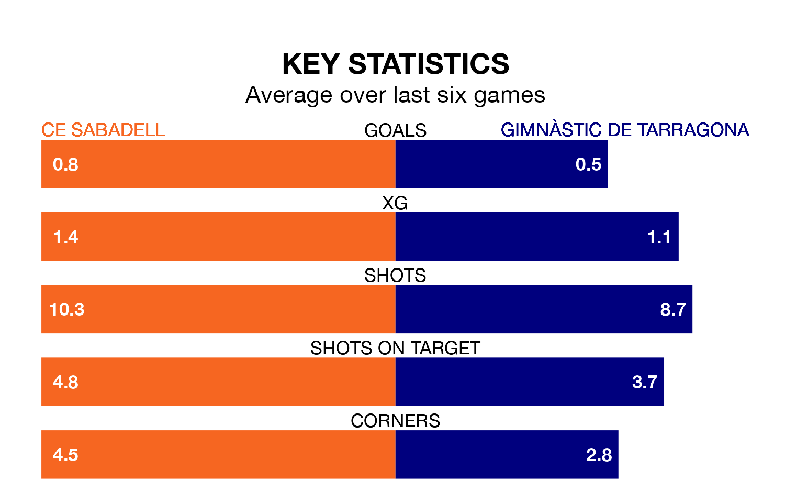

Gimnàstic de Tarragona travel to Estadi de la Nova Creu Alta for Sunday's late match against CE Sabadell looking to bounce back from defeat last time out in Primera Division RFEF Group 1.
Gimnàstic de Tarragona, who sit fourth in the league after 34 games, fell to a 3-0 away defeat to Cultural y Deportiva Leonesa on April 28.
They face a CE Sabadell side who also lost their last match, a 4-0 defeat to Unionistas de Salamanca CF, and who sit 15th in the table.
In Alberto Varó Lara, Gimnàstic de Tarragona can rely on one of the league's safest pair of hands. He has kept 12 clean sheets in his 20 appearances this season, and only one other 'keeper – Cultural y Deportiva Leonesa's Miguel Bañuz Antón – has been able to prevent the opposition scoring on more occasions in Primera Division RFEF Group 1.
In CE Sabadell's net, Adrián Ortolá Vañó has four clean sheets in 25 games. He has conceded a goal every 64 minutes, more than twice as often as the 158 minutes between goals for Varó Lara.
In the last 10 years, CE Sabadell and Gimnàstic de Tarragona have played each other on six occasions. They won three each.
On average, CE Sabadell scored 0.8 goals and Gimnàstic de Tarragona 0.7 in those matches.
Their last meeting was on September 24, when Gimnàstic de Tarragona won 2-0 at home.
With 33 goals in 34 games so far this season, the hosts are scoring at below the league average rate with 1.0 goals per game. And they are conceding more than average, letting in 51 goals at a rate of 1.5 per game.
The away team are also below average scorers, with 1.0 goal per game, compared to a league average of 1.1. They have conceded 0.6 goals per game.
CE Sabadell are in mixed form in Primera Division RFEF Group 1, with two wins and a draw from their last six games.
With three wins and three losses over that period, Gimnàstic de Tarragona's form is slightly better – they have taken nine points from 18, compared to CE Sabadell's seven.
Updated: 10:44 (UTC), 30/04/24